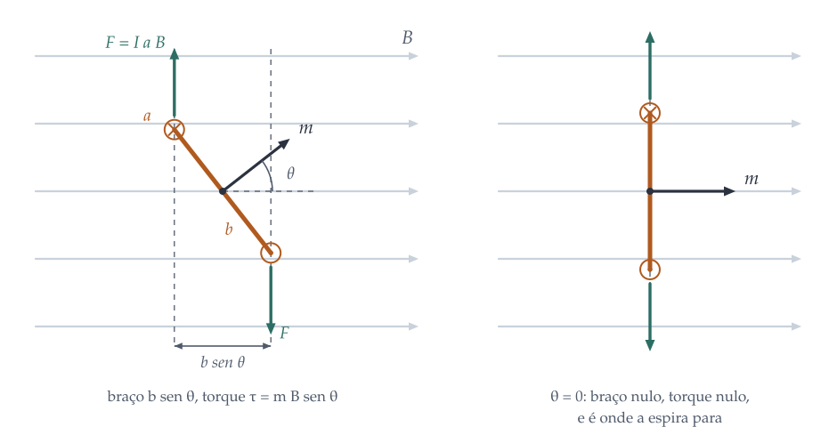
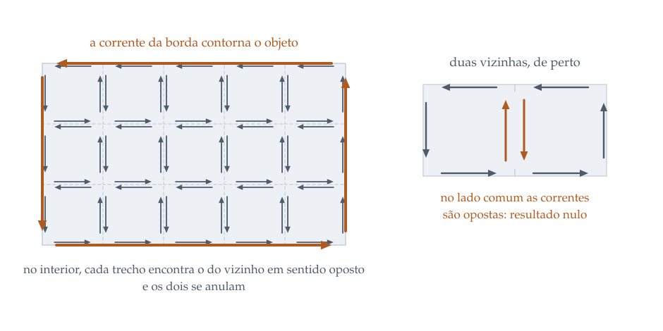
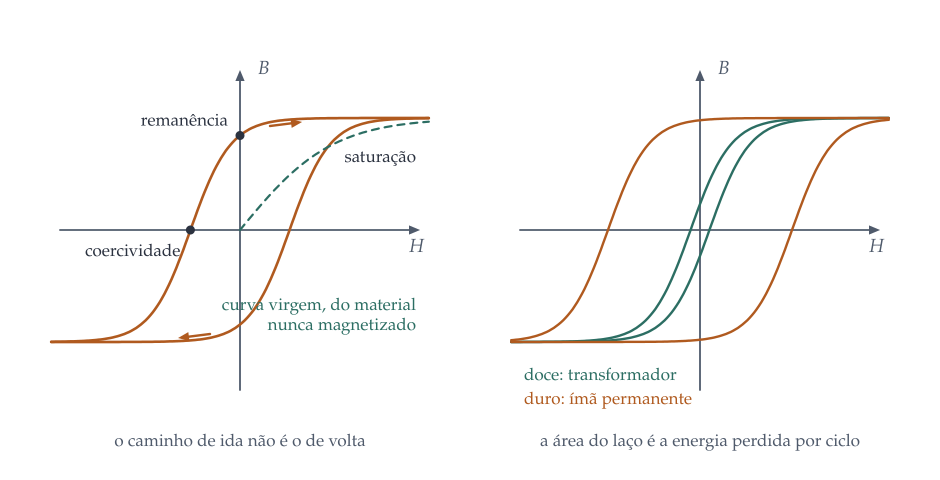

Magnetização de saturação
Onde todos os domínios já estão alinhados e aumentar \(H\) não adianta mais.
EM II · 8 encontros de duas horas
Magnetização, correntes ligadas, o campo auxiliar H e os três tipos de resposta magnética: diamagnetismo, paramagnetismo e ferromagnetismo.
Até aqui, correntes em fios. Mas todo material é feito de átomos, e dentro de cada átomo há elétrons que orbitam e que giram em torno de si mesmos. Cada um desses movimentos é uma corrente minúscula, e portanto um dipolo magnético. A pergunta deste capítulo é o que acontece quando bilhões desses dipolos são expostos a um campo externo.
A resposta começa com duas contas sobre um único dipolo.
Tome uma espira retangular rígida de lados \(a\) e \(b\), percorrida por corrente \(I\), mergulhada num campo uniforme \(\vet{B}\), com a normal ao plano da espira fazendo um ângulo \(\theta\) com o campo.

Nos dois lados de comprimento \(a\), as forças \(I\vet{a}\cruz\vet{B}\) têm módulo \(IaB\), apontam em sentidos opostos e estão separadas por \(b\sen\theta\). Elas formam um binário: força resultante nula, torque não nulo. Os outros dois lados dão forças que se cancelam e cuja linha de ação passa pelo centro, de modo que não contribuem. Sobra
\[ \tau = IabB\sen\theta = mB\sen\theta, \qquad m \equiv Iab = I\!A, \]ou, em forma vetorial,
\[ \boxed{\;\vet{\tau} = \vet{m}\cruz\vet{B}.\;} \]Este torque gira o dipolo até \(\vet{m}\) ficar paralelo a \(\vet{B}\), que é a posição de energia mínima, \(U = -\vet{m}\cdot\vet{B}\). É exatamente o que a agulha da bússola faz, e é o mecanismo de todo paramagnetismo: o campo não cria os dipolos, ele apenas os alinha contra a agitação térmica.
Num campo uniforme, a força resultante sobre a espira é nula: cada lado sente o oposto do que sente o lado de frente. Num campo não uniforme, não. Partindo de \(\vet{F} = I\oint d\vet{\ell}\cruz\vet{B}\) e expandindo \(\vet{B}\) em torno do centro da espira, o termo de ordem zero some na integral fechada e o primeiro termo sobrevive, dando
\[ \boxed{\;\vet{F} = \nabla\left(\vet{m}\cdot\vet{B}\right).\;} \]Repare no que isto diz: a força é o gradiente da energia de interação, com sinal trocado, como sempre. Um dipolo já alinhado é puxado para a região de campo mais intenso. É por isso que o ímã atrai o prego e que a limalha de ferro corre para os polos, onde as linhas se adensam.
E a objeção do capítulo anterior? Ficou dito lá que a força magnética não realiza trabalho, e agora o ímã levanta o prego. Não há contradição: a energia vem da fonte que mantém as correntes microscópicas, e no caso do ímã permanente ela vem do próprio arranjo dos spins, que é energia interna do material. O que a força magnética faz é intermediar, nunca fornecer.
Os dipolos atômicos não são postos à mão: eles vêm do movimento de cargas. Suponha correntes produzidas por partículas de carga \(q_i\) e massa \(M_i\), movendo-se com velocidades \(\vet{v}_i\). O momento magnético de cada uma é
\[ \vet{m}_i = \frac{q_i}{2}\left(\vet{r}_i\cruz\vet{v}_i\right) = \frac{q_i}{2M_i}\,\vet{L}_i, \]onde \(\vet{L}_i = M_i(\vet{r}_i\cruz\vet{v}_i)\) é o momento angular. Esta proporcionalidade entre momento magnético e momento angular é a razão giromagnética, e ela tem consequências que extrapolam o eletromagnetismo: magnetizar um corpo é dar-lhe momento angular, e um pião magnetizado precessa num campo em vez de simplesmente se alinhar.
Para o elétron, a escala natural é o magnéton de Bohr,
\[ \mu_B = \frac{e\hbar}{2m_e} = 9{,}274\cdot10^{-24}\;\mathrm{J/T}, \]e é com ele que se mede o momento magnético de qualquer átomo.
Considere um elétron numa órbita de raio \(R\), mantido pela atração eletrostática do núcleo. Ligue um campo \(\vet{B}\) perpendicular ao plano da órbita. A força magnética \(q\bar{v}B\) soma-se à centrípeta, e para manter o raio o elétron tem de acelerar ou frear:
\[ \frac{1}{4\pi\varepsilon_0}\frac{Zq^2}{R^2} + q\bar{v}B = \frac{M\bar{v}^2}{R}. \]Comparando com o caso sem campo e ficando em primeira ordem, a variação de velocidade é \(\Delta v = qRB/2M\), e a variação do momento de dipolo é
\[ \boxed{\;\Delta\vet{m} = -\frac{q^2R^2}{4M}\,\vet{B}.\;} \]O sinal é o conteúdo da fórmula: o momento induzido é oposto ao campo. Isto é a lei de Lenz em escala atômica, e vale para qualquer material, porque todo átomo tem elétrons em órbita. O diamagnetismo é universal; ele só não é notado quando há paramagnetismo ou ferromagnetismo por cima, que são efeitos muito maiores.
Um aviso honesto sobre este argumento. A conta acima é clássica, e a física estatística clássica demonstra um teorema incômodo: em equilíbrio térmico, a magnetização de um sistema clássico de cargas é rigorosamente nula, porque o campo magnético não aparece na energia e portanto não aparece na função de partição. É o teorema de Bohr-van Leeuwen. A conclusão correta é que todo magnetismo da matéria é um efeito quântico: ele depende de níveis discretos e do spin. O modelo de órbita acima acerta a ordem de grandeza e o sinal porque imita, com linguagem clássica, o que a mecânica quântica faz de verdade. A função de partição que torna isso preciso está no Módulo 5 da Física Estatística.
Quando os átomos já têm momento magnético permanente, por elétrons desemparelhados, o campo externo não precisa induzir nada: basta alinhar o que existe. A competição é com a agitação térmica, e o resultado é o paramagnetismo, com susceptibilidade positiva e proporcional a \(1/T\).
Essa dependência com a temperatura é a lei de Curie, e deduzi-la não é assunto de eletromagnetismo: é um problema de ocupação de níveis, que se resolve com a distribuição de Boltzmann. O eletromagnetismo entrega aqui a energia \(U = -\vet{m}\cdot\vet{B}\); a estatística entrega o resto. A dedução completa, com a função de Brillouin e a lei de Curie, está no Módulo 9 da Física Estatística, e a versão clássica, com a função de Langevin, aparece no Módulo 4.
Um pedaço de material magnetizado tem um dipolo em cada átomo, e são muitos demais para somar um a um. A saída é a mesma da eletrostática: define-se uma densidade e trabalha-se com ela. A magnetização é o momento de dipolo por unidade de volume,
\[ \vet{M} = \frac{d\vet{m}}{d\tau}, \]medida em ampère por metro. A pergunta seguinte é qual campo um objeto com \(\vet{M}\) conhecida produz.
Some os potenciais vetores de todos os dipolos. Cada um contribui com
\[ \vet{A}_{\text{dip}}(\vet{r}) = \frac{\mu_0}{4\pi}\,\frac{\vet{m}\cruz\vers{\imath}}{\imath^2}, \]de modo que o objeto inteiro dá
\[ \vet{A}(\vet{r}) = \frac{\mu_0}{4\pi}\int \frac{\vet{M}(\vet{r}')\cruz\vers{\imath}}{\imath^2}\,d\tau'. \]Esta integral parece intratável, mas um truque a desmonta. Use \(\nabla'(1/\imath) = \vers{\imath}/\imath^2\) para trocar o integrando, aplique a identidade do produto para separar em dois termos e converta um deles em integral de superfície. O resultado é limpo:
\[ \vet{A}(\vet{r}) = \frac{\mu_0}{4\pi}\int \frac{\vet{J}_b}{\imath}\,d\tau' + \frac{\mu_0}{4\pi}\oint \frac{\vet{K}_b}{\imath}\,da', \]com
\[ \boxed{\;\vet{J}_b = \rot{\vet{M}}, \qquad \vet{K}_b = \vet{M}\cruz\vers{n}.\;} \]Olhe o que aconteceu: o potencial de um objeto magnetizado é exatamente o de duas correntes comuns, uma no volume e outra na superfície. Não são correntes fictícias nem artifício de cálculo: são o efeito líquido das correntes atômicas que não se cancelam com as vizinhas.
Por que a corrente de superfície é \(\vet{M}\cruz\vers{n}\). Imagine o material como um empilhamento de espirinhas idênticas, lado a lado. No interior, cada trecho de espira tem, encostado nele, o trecho da espira vizinha percorrido no sentido oposto: os dois se anulam. Isso vale em todo ponto onde \(\vet{M}\) é uniforme, e por isso \(\vet{J}_b = \rot{\vet{M}}\) só não é nulo onde a magnetização varia. Na superfície externa, porém, não há vizinha para cancelar, e sobra uma corrente que contorna o objeto. Um ímã cilíndrico uniformemente magnetizado é, para todos os efeitos, um solenoide sem fio.

Na prática, não se controla a corrente ligada: controla-se a corrente que passa pelo fio que o experimentador enrolou, chamada de corrente livre. A corrente total é a soma,
\[ \vet{J} = \vet{J}_\ell + \vet{J}_b = \vet{J}_\ell + \rot{\vet{M}}, \]e levando isso na lei de Ampère,
\[ \frac{1}{\mu_0}\rot{\vet{B}} = \vet{J}_\ell + \rot{\vet{M}} \quad\Longrightarrow\quad \rot{\left(\frac{\vet{B}}{\mu_0} - \vet{M}\right)} = \vet{J}_\ell. \]A combinação entre parênteses merece nome próprio. É o campo auxiliar
\[ \boxed{\;\vet{H} \equiv \frac{\vet{B}}{\mu_0} - \vet{M}, \qquad \rot{\vet{H}} = \vet{J}_\ell, \qquad \oint \vet{H}\cdot d\vet{\ell} = I_{\ell,\text{env}}.\;} \]A utilidade é imediata: num solenoide com núcleo de ferro, \(H\) é simplesmente \(nI\), medido no amperímetro, sem precisar saber nada sobre o ferro. É por isso que \(\vet{H}\) é o campo com que se trabalha em laboratório, e \(\vet{B}\) o que se quer descobrir.
A armadilha que derruba meio mundo. É tentador concluir que \(\vet{H}\) é para o magnetismo o que \(\vet{D}\) é para a eletrostática, e que basta conhecer a corrente livre para achá-lo. Não é verdade. Tomando o divergente,
\[ \divg{\vet{H}} = \frac{1}{\mu_0}\divg{\vet{B}} - \divg{\vet{M}} = -\divg{\vet{M}}, \]que não é nulo em geral. Enquanto \(\vet{B}\) nunca tem fontes, \(\vet{H}\) tem: ele nasce e morre onde a magnetização muda, tipicamente nas faces de um ímã. Conhecer \(\rot{\vet{H}}\) não determina \(\vet{H}\): falta o divergente. Um ímã permanente na mesa, sem corrente livre nenhuma, tem \(\rot{\vet{H}} = 0\) e mesmo assim \(\vet{H} \ne 0\), apontando contra a magnetização no interior. É o campo desmagnetizante, e é ele que limita o que um ímã consegue fazer.
A esfera uniformemente magnetizada mostra a diferença numa figura só. As linhas de \(\vet{B}\) se fecham, atravessando o material de baixo para cima e voltando por fora. As de \(\vet{H}\) nascem na face de cima e morrem na de baixo, como se houvesse carga magnética ali, e dentro da esfera apontam contra \(\vet{M}\).
As condições do capítulo 5 se reescrevem separando livre de ligado:
\[ B_\perp^{\text{acima}} = B_\perp^{\text{abaixo}}, \qquad H_\perp^{\text{acima}} - H_\perp^{\text{abaixo}} = -\left(M_\perp^{\text{acima}} - M_\perp^{\text{abaixo}}\right), \] \[ \vet{H}_\parallel^{\text{acima}} - \vet{H}_\parallel^{\text{abaixo}} = \vet{K}_\ell\cruz\vers{n}. \]A componente normal de \(\vet{B}\) é sempre contínua, porque \(\divg{\vet{B}}=0\) não admite exceção. A componente tangencial de \(\vet{H}\) só salta se houver corrente livre na superfície: a corrente ligada já está embutida na definição de \(\vet{H}\).
Falta fechar o problema. As equações acima relacionam \(\vet{B}\), \(\vet{H}\) e \(\vet{M}\), mas são duas equações para três campos: é preciso dizer como o material responde. Essa relação não vem do eletromagnetismo; ela vem da estrutura microscópica, e é onde a física estatística entra para valer.
Para campos não muito intensos, muitos materiais respondem linearmente:
\[ \vet{M} = \chi_m \vet{H}, \qquad \vet{B} = \mu_0(1 + \chi_m)\vet{H} \equiv \mu\vet{H}, \]com \(\chi_m\) a susceptibilidade magnética, adimensional, e \(\mu\) a permeabilidade do material. O sinal e a ordem de grandeza de \(\chi_m\) separam os três comportamentos:
| \(\chi_m\) | origem | com a temperatura | |
|---|---|---|---|
| Diamagnético água, cobre, bismuto |
negativa, \(10^{-5}\) | momento induzido pela lei de Lenz, em todo átomo | praticamente independente |
| Paramagnético alumínio, oxigênio líquido |
positiva, \(10^{-5}\) a \(10^{-3}\) | alinhamento de momentos permanentes | cai com \(1/T\): lei de Curie |
| Ferromagnético ferro, níquel, cobalto |
não se define: \(10^{3}\) a \(10^{5}\), e depende da história | interação de troca entre vizinhos, de origem quântica | some acima de \(T_c\), e aí o material vira paramagnético |
As duas últimas linhas são, literalmente, conteúdo de física estatística escrito em linguagem de eletromagnetismo. A lei de Curie é o limite de campo fraco da função de Brillouin; a temperatura crítica é o ponto em que o campo médio dos vizinhos deixa de sustentar o alinhamento. Os dois resultados são deduzidos no Módulo 9 da Física Estatística, com o modelo de Ising e a aproximação de campo médio de Weiss.
No ferromagneto, o alinhamento não precisa de campo externo: ele se sustenta sozinho. A razão é a interação de troca, que é quântica e não tem análogo clássico: ela favorece energeticamente que spins vizinhos apontem no mesmo sentido, com uma intensidade equivalente a campos de centenas de teslas, muito além de qualquer interação dipolo-dipolo.
Se é assim, por que um prego não é um ímã? Porque o alinhamento total custaria muita energia de campo externo, e o material se quebra em domínios, regiões de alguns micrômetros, cada uma magnetizada ao máximo, mas apontando em direções diferentes, de modo que a soma dá zero. Magnetizar um prego não é alinhar átomo por átomo: é fazer os domínios favoravelmente orientados crescerem às custas dos outros, movendo as paredes entre eles.
E as paredes de domínio não voltam exatamente de onde saíram: elas prendem em impurezas e defeitos. Daí a histerese. Percorrendo um ciclo de \(H\), a curva \(B(H)\) não é uma função: ela depende do caminho. Os três números que a descrevem são

Onde todos os domínios já estão alinhados e aumentar \(H\) não adianta mais.
O \(B\) que sobra quando \(H\) volta a zero. É o que faz o ímã permanente permanente.
O \(H\) reverso necessário para zerar \(B\). Alta nos ímãs permanentes, baixa nos núcleos de transformador.
A área dentro do ciclo é energia dissipada por volta, em forma de calor. É por isso que o núcleo de um transformador é feito de ferro doce, de ciclo estreito: cada ciclo da rede percorre a curva sessenta vezes por segundo, e a área perdida vira aquecimento. E é por isso que o ímã da geladeira é feito do material oposto, de ciclo largo, que resiste a ser desmagnetizado.
Dois programas, no mesmo padrão dos anteriores.
Calcula \(\vet{B}\) e \(\vet{H}\) de uma esfera uniformemente magnetizada somando a corrente ligada de superfície \(\vet{K}_b = \vet{M}\cruz\vers{n}\) com a rotina de Biot-Savart do capítulo 5. É a demonstração numérica de que corrente ligada é corrente de verdade.
Confira assim: o campo interno tem de ser uniforme e valer \(\frac{2}{3}\mu_0 M\); fora, tem de ser dipolar com \(m = \frac{4}{3}\pi R^3 M\). O programa compara os dois.
Resolve a equação de campo médio de Weiss, \(m = \tgh\left[(m + h)\,T_c/T\right]\), por ponto fixo, varrendo \(h\) para cima e para baixo. Abaixo de \(T_c\) a equação tem três soluções, o sistema fica preso naquela de onde veio, e a histerese aparece sozinha.
Confira assim: acima de \(T_c\) o laço tem de fechar numa curva só, e a susceptibilidade inicial tem de seguir a lei de Curie-Weiss, \(\chi \propto 1/(T - T_c)\). O programa ajusta e imprime o expoente.
Vale dizer o que o segundo programa não é. A histerese que ele produz vem da multiplicidade de soluções da equação de campo médio, que é um efeito coletivo. A histerese de um ferromagneto real tem outra origem, mais suja: paredes de domínio presas em defeitos. O modelo acerta a forma do laço e a existência da temperatura crítica, e erra a coercividade por ordens de grandeza. É um bom exemplo de modelo que ensina o mecanismo sem servir para projetar nada.